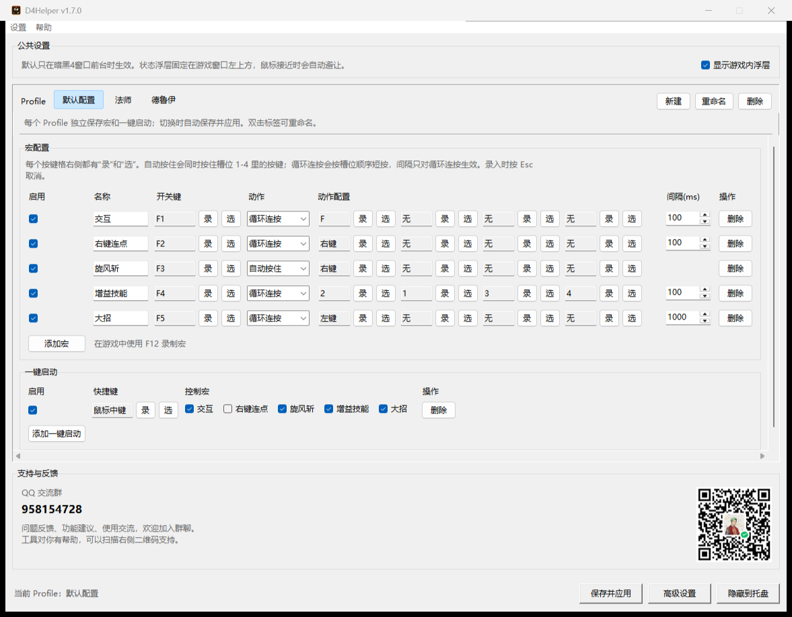
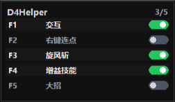

直接新建，随时改名
点击“新建”就得到空白的“配置 1、配置 2……”。可以重命名为角色或玩法，也可以删除不再使用的配置。
D4Helper v1.7.0 · Windows
为野蛮人、法师或不同玩法保存独立的宏和一键启动配置。点击 Profile 标签就能切换，少一点重复设置，多一点专注游戏。
只在匹配的暗黑 4 窗口前台时生效，切出游戏自动停止宏并释放按键。
点击角色标签查看示例。实际宏和快捷键由你自行配置。
New in v1.7
宏不用堆在同一页，切换角色也不必重新勾选一键启动。
点击“新建”就得到空白的“配置 1、配置 2……”。可以重命名为角色或玩法，也可以删除不再使用的配置。
每个 Profile 有自己的宏、录制内容、一键启动快捷键和勾选项。不同 Profile 可以使用相同的宏名称和快捷键。
切换时保存当前编辑并应用目标配置，重启恢复上次选中项。切换会先停止宏并释放按键，回到游戏后再用快捷键启动。
浮层、窗口匹配和录制快捷键为公共设置。旧配置会自动迁移到“默认配置”；新建 Profile 从空白开始。
Features
按一次开启，再按一次关闭。按你的习惯配置动作与快捷键。
最多设置 4 个按键槽位，同时按住其中所有非空按键，再按一次开关键全部释放。支持键盘和鼠标左键、右键、中键。
按 4 个槽位的顺序循环短按并跳过空槽位。间隔默认 100ms，可手动调整，最低 1ms；实际时序受系统和游戏影响。
在游戏内按 F12 开始倒计时，再按一次结束录制。支持执行一次或循环回放，记录鼠标点击落点，不录制移动轨迹。
用一个快捷键控制选中的一组宏，可添加多组并单独启用。每个 Profile 独立保存这些组合，取消勾选也会正确保留。
显示当前 Profile 的宏名称、开关键、开关状态和录制进度。从游戏窗口左上方显示，鼠标穿透，接近时自动避让。
切出游戏会停止宏并释放输入，切回后不会自动恢复。配置好后可隐藏到托盘，退出时清理按住的鼠标和键盘状态。
Screenshots
Profile 中只保留宏配置和一键启动；内容较多时可以滚动，公共设置、支持入口和保存按钮保持可见。


Quick start
解压下载包，运行 D4Helper.exe。默认已匹配暗黑 4；需要调整时打开“高级设置 → 窗口匹配”。
可以直接试用“默认配置”，或点击“新建”创建空白页，再用“重命名”改成自己的角色或玩法。
添加宏并选择动作、槽位和间隔。点“录”绑定按键，点“选”选择常用键；在“一键启动”中勾选要控制的宏。
点击“保存并应用”，回到暗黑 4 使用快捷键。以后点击标签切换整套配置，切换时会自动保存当前编辑。
Download · v1.7.0
发布包包含 D4Helper.exe、config.json 和 VERSION。国内加速使用第三方 GitHub 代理，无法访问时请使用 GitHub Release。
升级前退出旧程序，并保留自己的 config.json，不要用压缩包中的初始配置覆盖它。
Release notes
v1.7.0 本次更新
独立保存宏和一键启动，切换自动保存，重启恢复选中项。公共设置移出标签内容，长列表支持滚动；修复一键启动勾选恢复的问题。
v1.6.0
移除路线地图、浮层拖动和布局编辑快捷键，F10、F11 可自由绑定宏。加入原生高精度输入内核和鼠标避让，状态浮层从游戏窗口左上方显示。
Support
QQ 交流群：958154728。欢迎反馈问题、提出建议，分享自己的角色配置。
如果工具帮你减少了重复操作，也可以扫码支持维护。打赏完全自愿，所有功能均可免费使用。